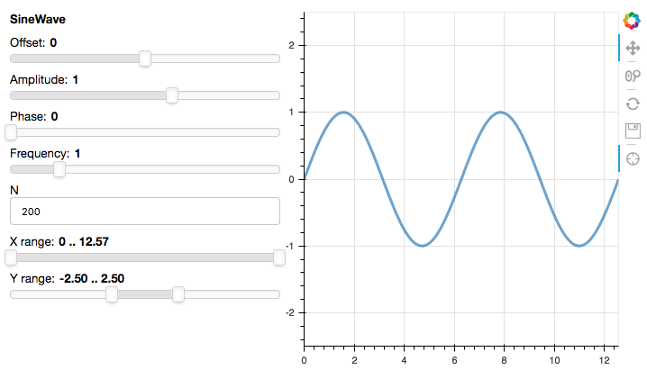

Django#
Panel generally runs on the Bokeh server which itself runs on Tornado. However, it is also often useful to embed a Panel app in large web application, such as a Django web server. Using Panel with Django requires a bit more work than for notebooks and Bokeh servers.
To run this example app yourself, you will first need to install django (e.g. conda install "django=2").
Additionally, you should also install the channels library (using pip install channels==2 or conda install channels=2 -c conda-forge). This makes it possible to run bokeh without launching a separate Tornado server.
Note that these examples can also be run with django 3 or django 4 (which will require channels 3), by installing the additional bokeh_django library. In this case replace all instances of bokeh.server.django with bokeh_django in the example below.
Configuration#
Before we start adding a bokeh app to our Django server we have to set up some of the basic plumbing. In the examples/apps/django/project folder we will add some basic configurations.
First of all we need to set up a Asynchronous Server Gateway Interface (ASGI) instead of the usual WSGI setup. For this purpose we add examples/apps/django/project/asgi.py:
import os
import django
from channels.routing import get_default_application
os.environ.setdefault('DJANGO_SETTINGS_MODULE', 'project.settings')
django.setup()
application = get_default_application()
Next we need to ensure the routing is configured correctly to handle a bokeh server in examples/apps/django/project/routing.py:
from channels.auth import AuthMiddlewareStack
from channels.routing import ProtocolTypeRouter, URLRouter
from django.apps import apps
bokeh_app_config = apps.get_app_config('bokeh.server.django')
application = ProtocolTypeRouter({
'websocket': AuthMiddlewareStack(URLRouter(bokeh_app_config.routes.get_websocket_urlpatterns())),
'http': AuthMiddlewareStack(URLRouter(bokeh_app_config.routes.get_http_urlpatterns())),
})
Lastly we need to add some configuration to examples/apps/django/project/settings.py. As a first step we need to add both channels and bokeh.server.django to the INSTALLED_APPS:
INSTALLED_APPS = [
...,
'channels',
'bokeh.server.django',
]
Secondly we need to declare the bokehjsdir as part of the STATICFILES_DIRS:
from bokeh.settings import bokehjsdir
STATICFILES_DIRS = [bokehjsdir()]
Now we need to add any templates we have:
TEMPLATES = [
{
'DIRS': [os.path.join(BASE_DIR, 'sliders', 'templates')],
...: ...,
}
]
and lastly add the app(s) and static_extensions() to the urlpatterns in the urls.py file:
from bokeh.server.django import autoload, static_extensions
from django.apps import apps
from django.contrib import admin
from django.urls import path, include
from django.contrib.staticfiles.urls import staticfiles_urlpatterns
import sliders.pn_app as sliders_app
pn_app_config = apps.get_app_config('bokeh.server.django')
urlpatterns = [
path('sliders/', include('sliders.urls')),
path('admin/', admin.site.urls),
]
bokeh_apps = [
autoload("sliders", sliders_app.app),
]
urlpatterns += static_extensions()
urlpatterns += staticfiles_urlpatterns()
Now it’s time to configure an actual app and add it to our Django server.
Sliders app#
Based on a standard Django app template, this app shows how to integrate Panel with a Django view
The sliders app is in examples/apps/django/sliders. We will cover the following additions/modifications to the Django app template:
sliders/sinewave.py: a parameterized object (representing your pre-existing code)sliders/pn_app.py: creates an app function from the SineWave classsliders/apps.py: how a Django app can import and use Bokeh serversliders/views.pyandtemplates/base.html: getting the Bokeh app into a Django view

To start with, in sliders/sinewave.py we create a parameterized object to serve as a placeholder for your own, existing code:
import numpy as np
import param
from bokeh.models import ColumnDataSource
from bokeh.plotting import figure
class SineWave(param.Parameterized):
offset = param.Number(default=0.0, bounds=(-5.0, 5.0))
amplitude = param.Number(default=1.0, bounds=(-5.0, 5.0))
phase = param.Number(default=0.0, bounds=(0.0, 2 * np.pi))
frequency = param.Number(default=1.0, bounds=(0.1, 5.1))
N = param.Integer(default=200, bounds=(0, None))
x_range = param.Range(default=(0, 4 * np.pi), bounds=(0, 4 * np.pi))
y_range = param.Range(default=(-2.5, 2.5), bounds=(-10, 10))
def __init__(self, **params):
super(SineWave, self).__init__(**params)
x, y = self.sine()
self.cds = ColumnDataSource(data=dict(x=x, y=y))
self.plot = figure(plot_height=400, plot_width=400,
tools="crosshair, pan, reset, save, wheel_zoom",
x_range=self.x_range, y_range=self.y_range)
self.plot.line('x', 'y', source=self.cds, line_width=3, line_alpha=0.6)
@param.depends('N', 'frequency', 'amplitude', 'offset', 'phase', 'x_range', 'y_range', watch=True)
def update_plot(self):
x, y = self.sine()
self.cds.data = dict(x=x, y=y)
self.plot.x_range.start, self.plot.x_range.end = self.x_range
self.plot.y_range.start, self.plot.y_range.end = self.y_range
def sine(self):
x = np.linspace(0, 4 * np.pi, self.N)
y = self.amplitude * np.sin(self.frequency * x + self.phase) + self.offset
return x, y
However the app itself is defined we need to configure an entry point, which is a function that accepts a bokeh Document and adds the application to it. In case of the slider app it looks like this:
import panel as pn
from .sinewave import SineWave
def app(doc):
sw = SineWave()
row = pn.Row(sw.param, sw.plot)
row.server_doc(doc)
Next we create a views.py file which returns a view the Django server can render:
# Create your views here.
from bokeh.embed import server_document
from django.http import HttpRequest, HttpResponse
from django.shortcuts import render
def sliders(request: HttpRequest) -> HttpResponse:
script = server_document(request.build_absolute_uri())
return render(request, "base.html", dict(script=script))
The base.html template should be in the TEMPLATES DIRS directory we declared in the settings.py file above. A very basic template might look like this but can be as complex as you need:
<!DOCTYPE html>
<html>
<head>
<title>Panel in Django: sliders</title>
</head>
<body>
{% block content %}
{{ script|safe }}
{% endblock %}
</body>
</html>
Next we declare a urls.py file to declare the urlpattern where to serve the sliders app to Django:
from django.urls import path
from . import views
app_name = 'sliders'
urlpatterns = [
path('', views.sliders, name='sliders'),
]
You should be able to run this app yourself by changing to the examples/apps/django directory and then running: python manage.py runserver; then visit http://localhost:8000/sliders in your browser to try the app.
Multiple apps#
This is the most basic configuration for a bokeh server. It is of course possible to add multiple apps in the same way and then registering them with Django in the way described in the configuration section above. To see a multi-app Django server have a look at examples/apps/django_multi_apps and launch it with python manage.py runserver as before.